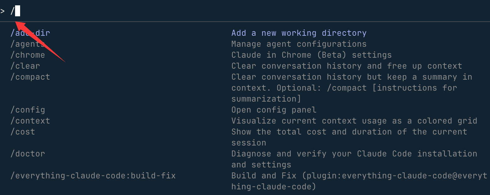
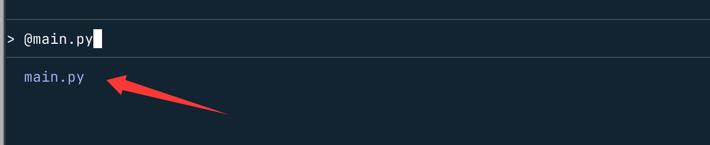
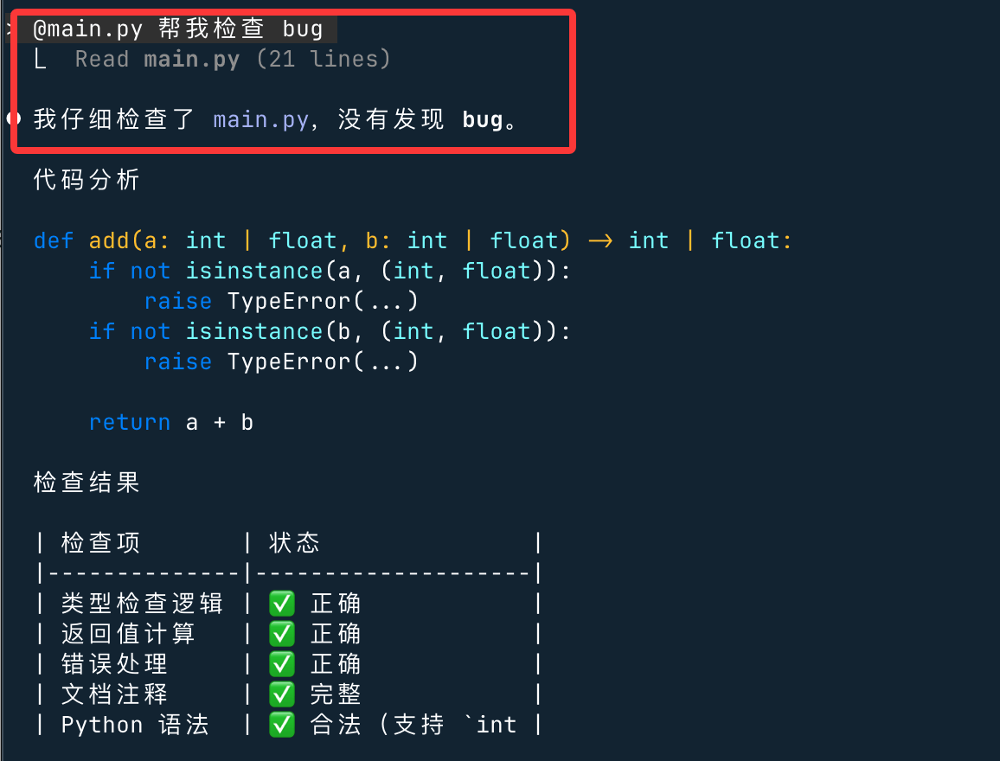
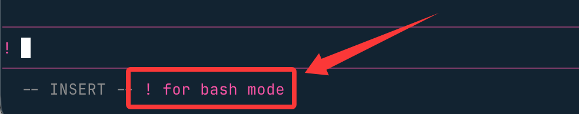
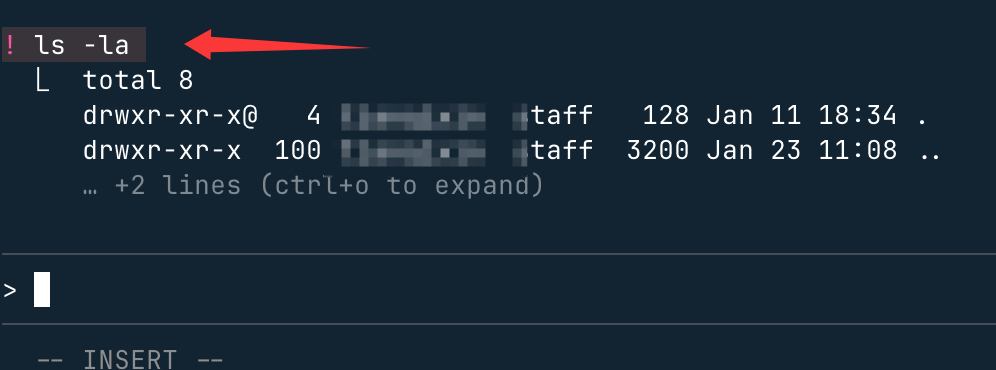

Claude Code 操作説明
Claude Code の入力欄は単なるチャットボックスではなく、次のようなものです：
AI + エディタ + コマンドディスパッチャを融合したターミナル
主に3種類のプレフィックストリガがあります：
| 記号 | タイプ | 本質的な機能 |
|---|---|---|
/ |
Command（コマンド） | 組み込み操作を実行 |
@ |
Context（コンテキスト） | ファイル/コード/ディレクトリを参照 |
! |
Bash モード | ターミナルコマンドを直接実行し、stdout/stderr を自動的にコンテキストに注入 |
# |
Memory（メモリ注入） | 内容を CLAUDE.md プロジェクトメモリに永続的に書き込み、セッションをまたいで長期的に有効にします。例：#config.yaml |
& |
Async（非同期タスク） | バックグラウンド/クラウドでタスクを非同期実行し、現在のセッションをブロックしません。ターミナルを閉じた後でも claude.ai/code で進捗を確認できます。 |
\+Enter |
Multiline（複数行入力） | 改行しても送信されず、複数行の内容を書き、長い要件の説明を一度に書き終えます。 |
| プレフィックスなし | 自然言語 | 通常のタスク指示 |
/—— 操作型コマンド（最重要）
/Claude Code で組み込みコマンドをトリガーする/ツールの中心的な記号で、ターミナルコマンドラインの命令プレフィックスに似ており、Claude に単なるテキスト生成ではなく特定の操作を実行するよう指示するために使います。
主な用途：組み込み機能の呼び出し（コード生成、ファイル操作、環境実行、プラグイン呼び出しなど）。
/後ろにコマンドキーワードが続き、スペースの後に引数（ファイル名、実行コマンド、修正対象など）を指定します。これは Claude Code が自然言語での対話和コード操作命令を区別するための鍵です。
入力/コマンドリストが表示されます：

よく使う高頻度コマンド：
| コマンド | 機能 |
|---|---|
/help |
すべての機能を表示 |
/clear |
会話をクリア |
/plan |
プランモードに入る |
/model |
モデルを切り替え |
/context |
コンテキスト使用状況を表示 |
/export |
会話をエクスポート |
/status |
環境ステータス |
/tasks |
バックグラウンドタスクを管理 |
/theme |
テーマ切り替え |
/memory |
CLAUDE.md を編集 |
例：
//plan 实现一个用户登录模块
@—— コンテキスト注入
@後ろにファイル名を続けると、自動的に候補が表示されます：

単一ファイルの参照：
@main.py 帮我检查 bug

複数ファイルの参照：
@main.py @main2.py 这两个是否有重复逻辑？ディレクトリ全体を参照して使用@ + ディレクトリパス:
@src/ 分析项目结构并给出优化建议
エラーログの参照：
@npm-debug.log 找出失败原因
Claude はファイルの内容を実際に推論コンテキストに読み込みます。
!-- Bash コマンド
入力の前に付けることで!Claude を介さずに bash コマンドを直接実行します。形式は次のとおりです：! + Bash 命令
! を入力すると Bash コマンドモードに入るように促されます：

例：現在のディレクトリを表示：! ls -la

Vim エディタモード
使用/vimコマンドで vim スタイルの編集を有効にするか、または/configで永続的に設定します。
モード切り替え
| コマンド | 操作 | 移行元モード |
|---|---|---|
Esc |
NORMAL モードに入る | INSERT |
i |
カーソルの前に挿入 | NORMAL |
I |
行頭に挿入 | NORMAL |
a |
カーソルの後に挿入 | NORMAL |
A |
行末に挿入 | NORMAL |
o |
下に行を開く | NORMAL |
O |
上に行を開く | NORMAL |
ナビゲーション（NORMAL モード）
| コマンド | 操作 |
|---|---|
h/j/k/l |
左/下/上/右に移動 |
w |
次の単語 |
e |
単語の末尾 |
b |
前の単語 |
0 |
行頭 |
$ |
行末 |
^ |
最初の非空白文字 |
gg |
入力開始 |
G |
入力終了 |
f{char} |
次の文字の出現位置にジャンプ |
F{char} |
前の文字の出現位置にジャンプ |
t{char} |
次の文字の出現位置の前にジャンプ |
T{char} |
前の文字の出現位置の後にジャンプ |
; |
最後の f/F/t/T アクションを繰り返す |
, |
最後の f/F/t/T アクションを逆方向に繰り返す |
編集（NORMAL モード）
| コマンド | 操作 |
|---|---|
x |
文字を削除 |
dd |
行を削除 |
D |
行末まで削除 |
dw/de/db |
単語を削除/末尾まで削除/後方に削除 |
cc |
行を変更 |
C |
行末まで変更 |
cw/ce/cb |
単語を変更/末尾まで変更/後方に変更 |
yy/Y |
行をヤンク（コピー） |
yw/ye/yb |
単語をヤンク/末尾までヤンク/後方にヤンク |
p |
カーソルの後に貼り付け |
P |
カーソルの前に貼り付け |
>> |
行をインデント |
<< |
行のインデントを解除 |
J |
行を連結 |
. |
最後の変更を繰り返す |
テキストオブジェクト（NORMAL モード）
テキストオブジェクトはd、c 和 yなどの演算子と連携します：
| コマンド | 操作 |
|---|---|
iw/aw |
単語の内部/周囲 |
iW/aW |
WORD（スペース区切り）の内部/周囲 |
i"/a" |
二重引用符の内部/周囲 |
i'/a' |
単一引用符の内部/周囲 |
i(/a( |
丸括弧の内部/周囲 |
i[/a[ |
角括弧の内部/周囲 |
i{/a{ |
波括弧の内部/周囲 |
コマンド履歴
Claude Code は現在のセッションのコマンド履歴を保持します：
- 履歴は作業ディレクトリごとに保存されます
- 使用
/clearコマンドでクリア - 上/下矢印キーで移動します（上記のキーボードショートカットを参照してください）
- 注意：履歴展開（
!）はデフォルトで無効です
Ctrl+R で逆方向検索
按 Ctrl+Rコマンド履歴をインタラクティブに検索：
- 検索を開始：押すと
Ctrl+R逆方向履歴検索が有効になります - クエリを入力：以前のコマンド内を検索するテキストを入力します - 検索語は一致した結果で強調表示されます
- 一致結果を移動：もう一度押すと
Ctrl+R古い一致結果を循環して表示 - 一致結果を確定：
- 按
Tab或Esc現在の一致を確定して編集を続行 - 按
Enter確定してコマンドをすぐに実行
- 按
- 検索をキャンセル：
- 按
Ctrl+Cキャンセルして元の入力を復元 - 空の検索で
Backspaceキャンセル
- 按
検索では一致したコマンドが表示され、検索語が強調表示されるため、以前の入力を簡単に見つけて再利用できます。
バックグラウンド bash コマンド
Claude Code はバックグラウンドで bash コマンドを実行でき、長時間実行されるプロセスが実行されている間も作業を続けられます。
バックグラウンド実行の仕組み
Claude Code がバックグラウンドでコマンドを実行するとき、コマンドを非同期で実行し、すぐにバックグラウンドタスク ID を返します。Claude Code はコマンドがバックグラウンドで実行を継続している間も、新しいプロンプトに応答できます。
バックグラウンドでコマンドを実行するには、次の方法があります：
- Claude Code にバックグラウンドでコマンドを実行するようプロンプトします
- Ctrl+Bを押すと、通常のBashツール呼び出しをバックグラウンドに移動できます。（Tmuxユーザーは、tmuxのプレフィックスキーのため、Ctrl+Bを2回押す必要があります。）
主な機能：
- 出力はバッファリングされ、ClaudeはTaskOutputツールを使用して取得できます
- バックグラウンドタスクには、追跡と出力取得のための一意のIDがあります
- Claude Codeが終了すると、バックグラウンドタスクは自動的にクリーンアップされます
すべてのバックグラウンドタスク機能を無効にするには、CLAUDE_CODE_DISABLE_BACKGROUND_TASKS環境変数を次のように設定します1。
一般的なバックグラウンドコマンド：
- ビルドツール（webpack、vite、make）
- パッケージマネージャー（npm、yarn、pnpm）
- テストランナー（jest、pytest）
- 開発サーバー
- 長時間実行されるプロセス（docker、terraform）
使用!プレフィックス付きの Bash モード
入力の前に～を付けることで!Claudeを介さずにbashコマンドを直接実行できます：
! npm test ! git status ! ls -la
Bashモード：
- コマンドとその出力を会話コンテキストに追加します
- リアルタイムの進行状況と出力を表示します
- 同じ～をサポート
Ctrl+B長時間実行されるコマンドをバックグラウンドで実行します - Claudeがコマンドを解釈または承認する必要はありません
- 履歴ベースの自動補完をサポート：部分的なコマンドを入力してTab現在のプロジェクト内の以前の
!コマンドを補完します
これは、会話コンテキストを維持しながら迅速なシェル操作を行うのに役立ちます。
キー操作の説明
一般操作
| ショートカットキー | 説明 | コンテキスト |
|---|---|---|
Ctrl+C |
現在の入力または生成をキャンセル | 標準の割り込み |
Ctrl+D |
Claude Codeセッションを終了 | EOF信号 |
Ctrl+G |
デフォルトのテキストエディターで開く | デフォルトのテキストエディターでプロンプトまたはカスタム応答を編集します |
Ctrl+L |
ターミナル画面をクリア | 会話履歴を保持 |
Ctrl+O |
詳細出力を切り替え | 詳細なツールの使用状況と実行状況を表示 |
Ctrl+R |
コマンド履歴を逆方向に検索 | 以前のコマンドを対話的に検索 |
Ctrl+V 或 Cmd+V（iTerm2）またはAlt+V（Windows） |
クリップボードから画像を貼り付け | 画像または画像ファイルのパスを貼り付けます |
Ctrl+B |
バックグラウンドでタスクを実行 | bashコマンドとエージェントをバックグラウンドで実行します。Tmuxユーザーは2回押します |
Left/Right arrows |
ダイアログタブ間を循環 | 権限ダイアログとメニューのタブ間を移動 |
Up/Down arrows |
コマンド履歴を移動 | 以前の入力を呼び出す |
Esc + Esc |
コード/会話を元に戻す | コードや会話を以前の状態に復元します |
Shift+Tab 或 Alt+M（一部の設定） |
権限モードを切り替え | 自動承認モード、Plan Mode、通常モードの間で切り替えます |
Option+P（macOS）またはAlt+P（Windows/Linux） |
モデルを切り替え | プロンプトをクリアせずにモデルを切り替えます |
Option+T（macOS）またはAlt+T（Windows/Linux） |
拡張思考を切り替え | 拡張思考モードを有効または無効にします。最初に/terminal-setupを実行してこのショートカットキーを有効にします |
テキスト編集
| ショートカットキー | 説明 | コンテキスト |
|---|---|---|
Ctrl+K |
行末まで削除 | 削除したテキストを貼り付け用に保存 |
Ctrl+U |
行全体を削除 | 削除したテキストを貼り付け用に保存 |
Ctrl+Y |
削除したテキストを貼り付け | を使用して貼り付けCtrl+K 或 Ctrl+U削除したテキスト |
Alt+Y（Ctrl+Yの後） |
貼り付け履歴を循環 | 貼り付け後、以前に削除したテキストを循環します。macOSではOptionをMetaに設定する必要があります |
Alt+B |
カーソルを1単語後ろに移動 | 単語ナビゲーション。macOSではOptionをMetaに設定する必要があります |
Alt+F |
カーソルを1単語前に移動 | 単語ナビゲーション。macOSではOptionをMetaに設定する必要があります |
テーマと表示
| ショートカットキー | 説明 | コンテキスト |
|---|---|---|
Ctrl+T |
コードブロックの構文ハイライトを切り替え | セレクターメニュー内でのみ/theme機能します。Claudeの応答内のコードが構文の色付けを使用するかどうかを制御します |
構文ハイライトはClaude Codeのネイティブビルドでのみ使用できます。
複数行入力
| 方法 | ショートカットキー | コンテキスト |
|---|---|---|
| クイックエスケープ | \ + Enter |
すべてのターミナルで動作 |
| macOSのデフォルト | Option+Enter |
macOSでのデフォルト設定 |
| Shift+Enter | Shift+Enter |
iTerm2、WezTerm、Ghostty、Kittyではそのまま動作します |
| 制御シーケンス | Ctrl+J |
複数行の改行 |
| 貼り付けモード | 直接貼り付け | コードブロックやログに最適 |
Shift+EnterはiTerm2、WezTerm、Ghostty、Kittyでは設定なしで動作します。他のターミナル（VS Code、Alacritty、Zed、Warp）では、/terminal-setupを実行してバインディングをインストールします。
クリックしてメモを共有
<p style="font-size:14px;">ノートはこの記事の内容をさらに拡張したものである必要があります！</p><br> <p style="font-size:12px;"><a href="../tougao.html" target="_blank">記事の投稿はこちらをクリック</a></p> <p style="font-size:14px;"><a href="../w3cnote/runoob-user-test-intro.html" target="_blank">登録招待コードの取得方法</a></p> <h3 class="text-muted"><i class="fa fa-info-circle" aria-hidden="true"></i> ノートを共有する前に<a href=";.html" class="runoob-pop">ログイン</a>が必要です！</h3> <p><a href="../w3cnote/runoob-user-test-intro.html" target="_blank">登録招待コードの取得方法</a></p>